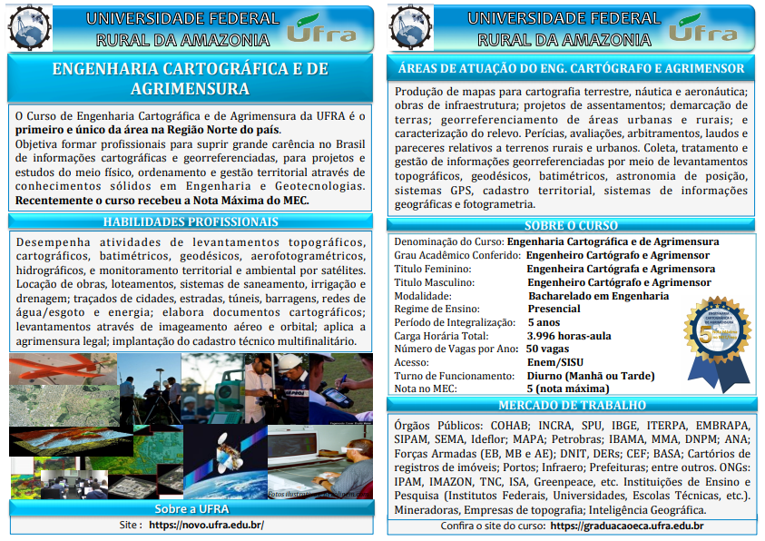

Conheça o curso
O Curso de Engenharia Cartográfica e de Agrimensura da UFRA é o primeiro e único da área na Região Norte do país. Objetiva formar profissionais para suprir grande carência no Brasil de informações cartográficas e georreferenciadas, para projetos e estudos do meio físico, ordenamento e gestão territorial através de conhecimentos sólidos em Engenharia e Geotecnologias.Recentemente o curso recebeu a Nota Máxima do MEC.
Para mais informações consulte o folder do curso abaixo:
